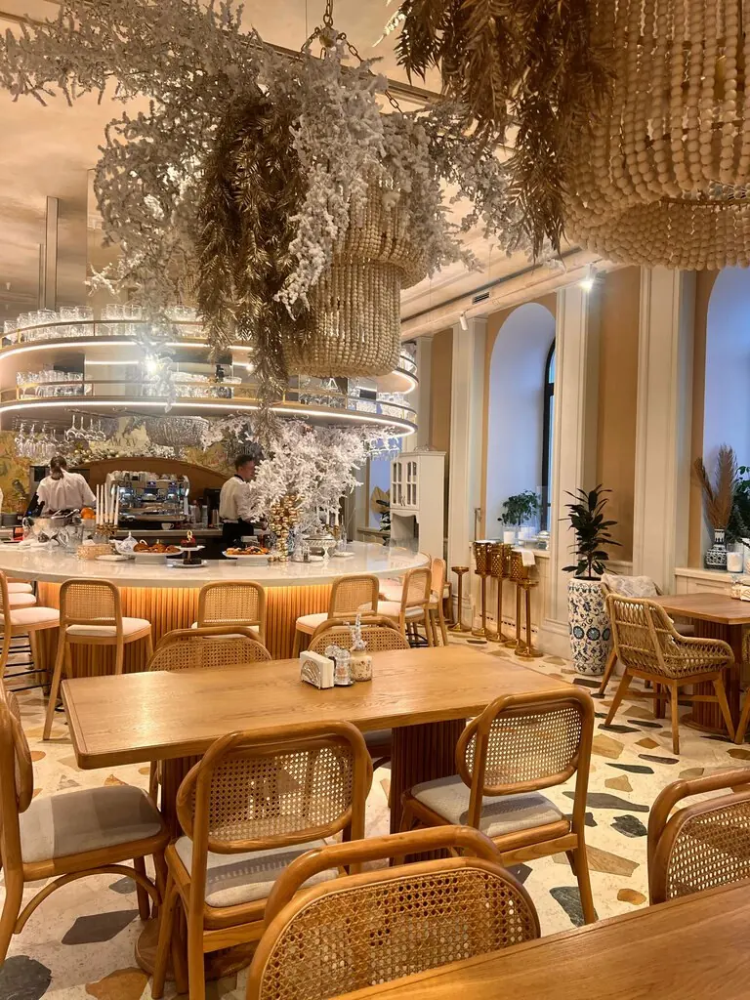
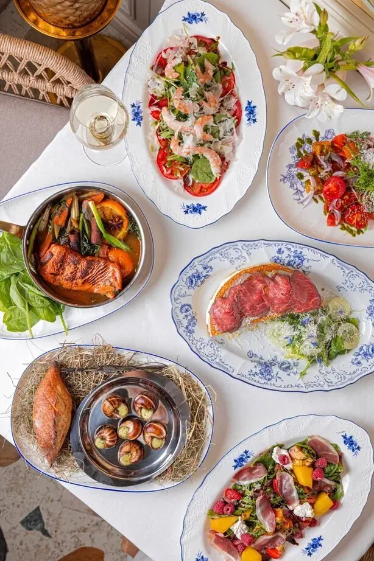
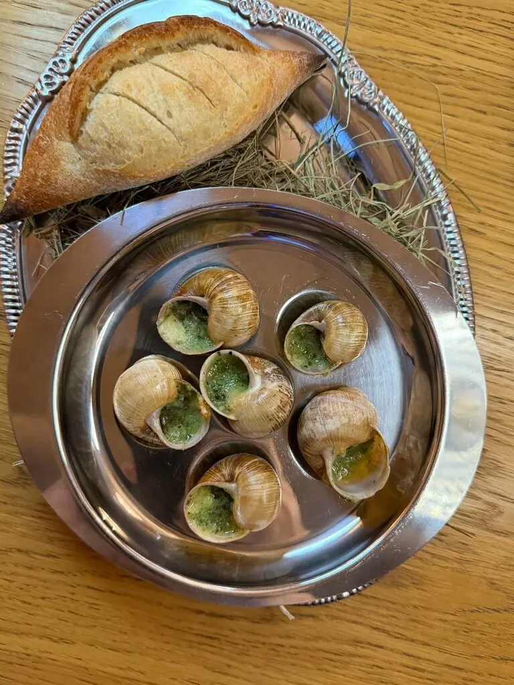
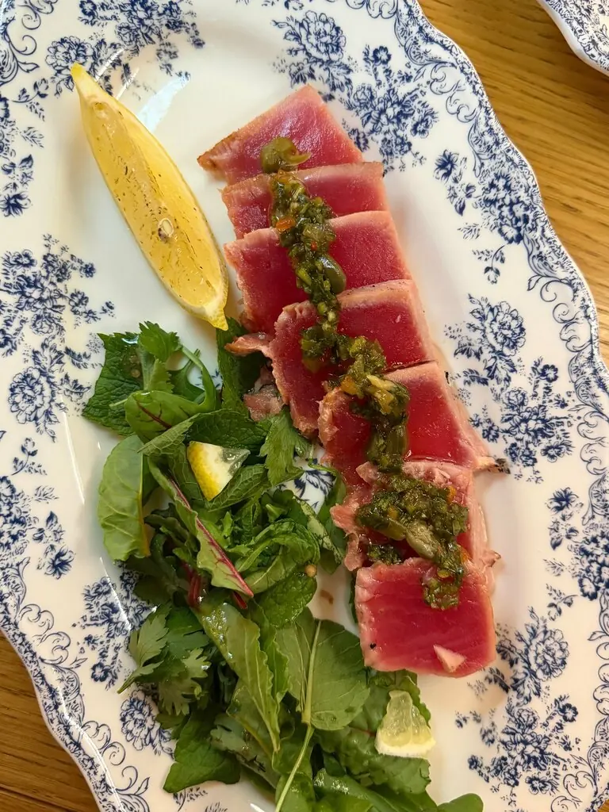
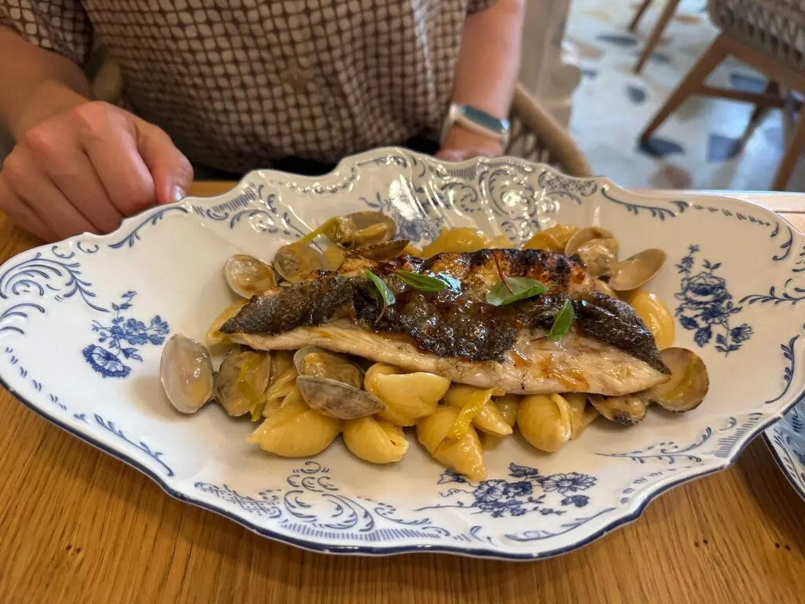
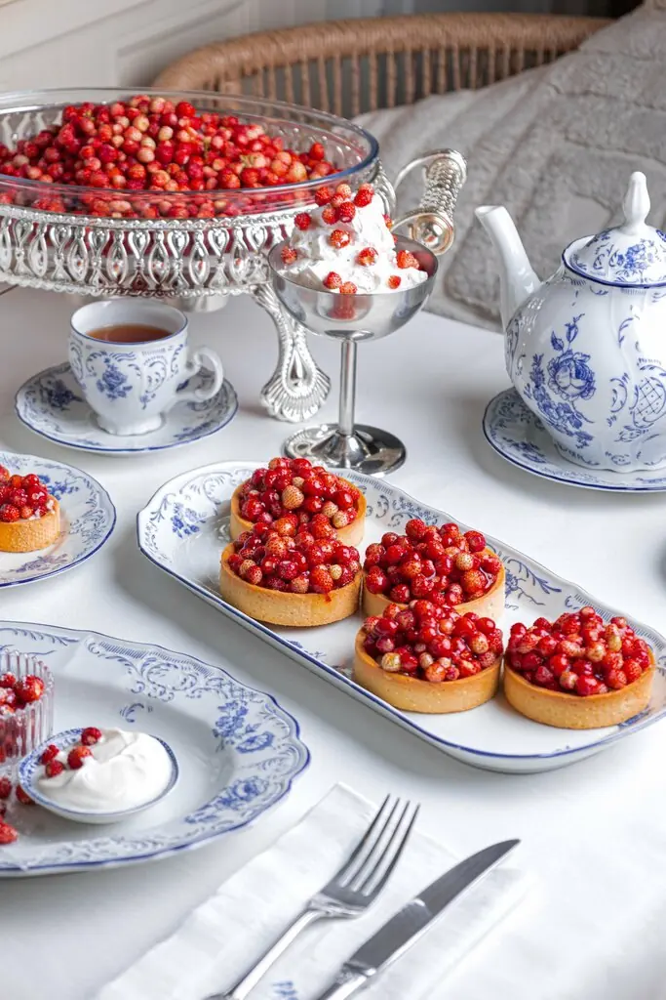
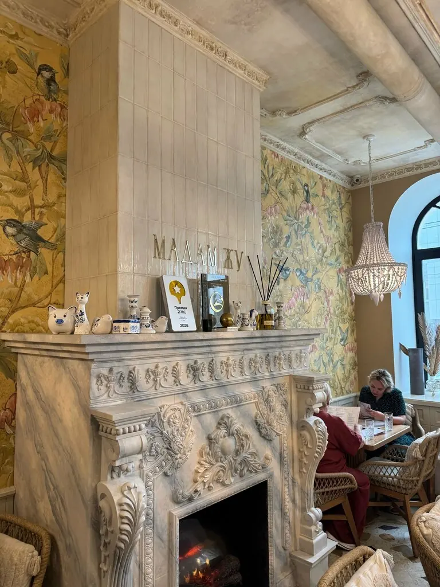
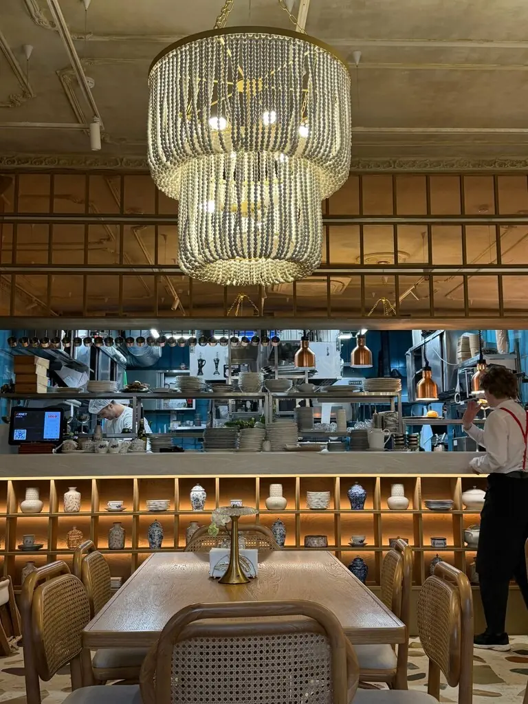
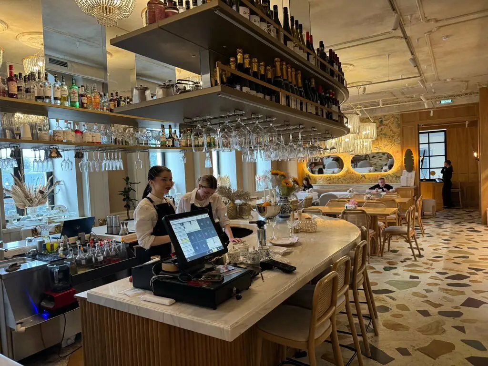

Madame Zhu
Французская и азиатская кухня в особняке с камином. Трюфельная овсянка утром, кок-о-ван вечером.
5,0 · 1194 оценки

Выпуск дня
Меню разворотом

Завтрак
Трюфельная овсянка с тунцом конфи780 ₽
Шакшука из фермерских яиц590 ₽
Блины с форелью и сырным кремом750 ₽
Основной курс
Кокот из цыплёнка и белых грибов680 ₽
Кокиль с лососем и креветками1 380 ₽
Кок-о-ванпо меню
Сладко
Профитроли с горячим шоколадом590 ₽
Наполеон с хурмой650 ₽
Королевская ватрушка320 ₽
Часть меню с Яндекс Карт, цены уточняйте у официанта.




Особняк, камин, хрусталь
Белокаменный дом на Ленина, открытая кухня и веранда летом. Всего 60 мест, а ещё бизнес-ланчи в будни.



Письма читателей
Очень вкусные завтраки и разнообразные бизнес-ланчи. Идеально и для друзей, и для романтичного вечера.Екатерина Калачева
Вкусно и красиво, интерьер шикарный, посуда супер стильная.Даша
Гостям из Санкт-Петербурга очень понравилось.Юлия Ульянова